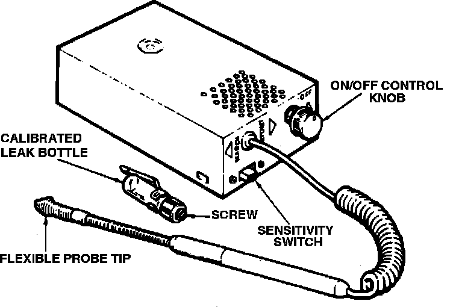

Non-Trouble Code Procedures
Testing the refrigerant system for leaks is one of the most important phases of troubleshooting. One or more of the methods outlined will prove useful in detecting leaks or checking connections if service work is performed. Before beginning any leak test, attach a manifold gauge set and note pressure. If little or no pressure is indicated, a partial charge must be installed. Check all connections, compressor head gasket, oil filler plug and compressor shaft seal for leaks.
ELECTRONIC LEAK DETECTORS
Fig. 1 Typical Electronic Leak Detector:

There are a number of electronic leak detectors, Fig. 1, available to perform leak tests. Refer to operating instructions for the unit being used and observe the following points:
1. Move the detector probe one inch per second in areas of suspected leaks.
2. Position the probe below the test point as refrigerant gas is heavier than air.
3. Be sure to check service access gauge port valve fittings (particularly when valve caps are missing) as dirt accumulations can destroy the sealing area of valve core when manifold gauge set is attached. Replace missing valve caps after cleaning valve core area. Valve caps should only be finger tightened. Using pliers to tighten valve caps may distort sealing surface of valve.
4. Check for leaks in manifold gauge set and hoses, as well as the rest of the system.
FLUID LEAK DETECTORS
Apply leak detector solution around joints to be tested. A cluster of bubbles will form immediately if there is a leak. A white foam that forms after a short while will indicate an extremely small leak. In some confined areas such as sections of the evaporator and condenser, electronic leak detectors will be more useful.